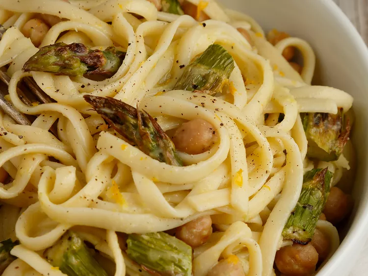

Creamy Lemon Garlic Pasta Recipe

Description:
This creamy pasta is made with Almond Breeze
Almondmilk to make a light yet filling dish. Made with baked asparagus and
garbanzo beans to make a well-balanced meal in one plate.
Ingredients
- 2 Cups Almond Breeze Unsweetened Original Almondmilk or Almond
Breeze Extra Creamy Almondmilk
- 1 Large bunch medium size asparagus
- 1 (15-oz.) can garbanzo beans, rinsed and drained
- 2 tablespoons olive oil, divided
- 1 1/2 tablespoons salt, divided
- 1 1/2 teaspoons freshly ground black pepper, divided
- 1 1/2 teaspons garlic powder, divided
- 1 pound dry pasta (any shape)
- 2 lemons, zested and juiced
- shaved Parmesan cheese to taste (optional)
Directions
- Preheat the oven to 450 degrees F (230 degrees C) and
line a baking sheet with foil.
- Trim about 2-inches of the bottom tough ends from the asparagus
spears and set aside. Cut remaining asparagus into 1-inch pieces.
Spread out asparagus pieces and garbanzo beans on the prepared
baking sheet. Drizzle with 1 tablespoon oil and sprinkle with 1/2
teaspoon each salt, pepper and garlic powder; toss well to coat.
- Roast in the preheated oven until asparagus is tender and beans are
slightly toasted, about 20 minutes.
- Meanwhile, bring a large pot of lightly salted water to a boil. Add
reserved asparagus ends and cook until very tender. Remove with a slotted
spoon and place into a food processor or blender.
- Return water to boiling, add pasta, and cook, stirring occasionally,
until tender yet firm to the bite, 9 to 12 minutes (depending on pasta
variety) Drain pasta well and return to the pot.
- While pasta is cooking, combine Almond Breeze Unsweetened Original
Almondmilk, remaining 1 tablespoon olive oil, 1 teaspoon of each salt,
pepper, and garlic powder, lemon zest, and lemon juice in blender or food
processor with the boiled asparagus, Blend until sauce is smooth.
- Toss sauce with hot cooked pasta and stir in roasted asparagus and
garbanzo beans. Top with shaved Parmesan cheese, if desired.